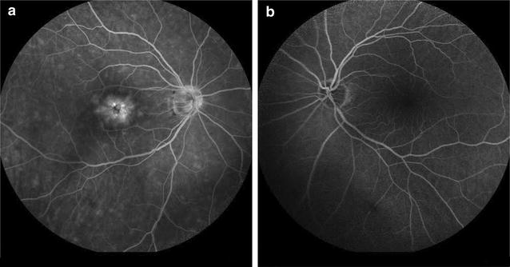
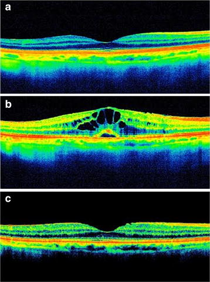
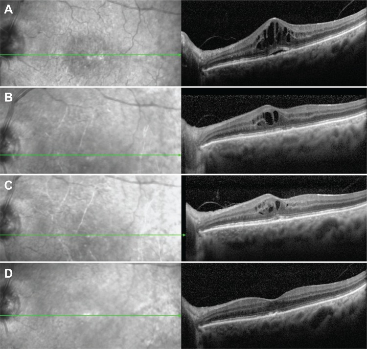

1882 — Phù hoàng điểm do thuốc nhỏ prostaglandin sau phaco: cơ chế, ngưỡng ngừng thuốc và bằng chứng ngược chiều / Prostaglandin-associated pseudophakic cystoid macular edema
Tags: pattern:phu-hoang-diem pattern:nang-hoang-diem pattern:dich-duoi-vong-mac vung:hoang-diem vung:the-thuy-tinh vung:tien-phong protocol:OCT protocol:FA protocol:phaco score:CST
Mức chắc chắn (certainty): tổng hợp y văn (literature synthesis) — ghép 4 ca nguyên văn (PMC5360021 CC BY 4.0; PMC4086850 CC BY-NC 3.0; PMC2975071 CC BY 3.0; PMC3529656 CC BY-NC 3.0), 1 tổng quan hệ thống 4 RCT (PMC11614555, CC BY 4.0), 1 đoàn hệ cơ sở dữ liệu 39.948 người (PMC11757063), 1 đoàn hệ 1.325 ca phaco (PMC13588649, CC BY 4.0) và 1 nghiên cứu 836 mắt phakic dùng EP2 agonist (PMC12332760). Không có RCT nào đủ lớn để trả lời "ngừng PGA trước phaco có lợi hay không" — đây là điểm phản biện trung tâm của bài.
Câu chốt: phù hoàng điểm do prostaglandin (PGA-CME) có thật, nhưng hiếm và không phải hệ quả tất yếu của việc dùng PGA. Bốn RCT gộp lại không thấy PGA làm tăng phù hoàng điểm sau phaco (PMC11614555), và trong 39.948 người mới dùng thuốc glôcôm, tỉ lệ phù hoàng điểm của nhóm PGA là 0,13% — thấp hơn chẹn beta 0,65%, alpha-agonist 0,55% và ức chế carbonic anhydrase 1,76% (PMC11757063). Vì vậy bài này không dạy "ngừng PGA cho mọi bệnh nhân trước phaco"; nó dạy nhận ra ca thật (OCT có nang + đáp ứng khi ngừng thuốc) và không bỏ sót các nguyên nhân khác của phù hoàng điểm giả thủy tinh thể.
1. Tổng quan bệnh học – cơ chế hình ảnh: vì sao PGA làm rò huyết tương vào hoàng điểm
1.1 Từ "hạ nhãn áp" đến "rò hàng rào máu–võng mạc"
- PGA hạ nhãn áp bằng cách nào: prostaglandin F2α (PGF2α) gắn thụ thể FP ở cơ thể mi → hoạt hóa matrix metalloproteinase (MMP) phá chất nền ngoại bào giữa các bó cơ → tăng thoát dịch qua đường màng bồ đào–củng mạc (uveoscleral outflow). Đây là con đường không phụ thuộc trabecular meshwork, nên PGA hạ áp rất mạnh.
- Vì sao cùng cơ chế ấy gây phù: MMP và tăng tính thấm nội mô không chỉ có ở cơ thể mi; thụ thể FP còn có trên nội mô mạch võng mạc và tế bào Müller. Kích hoạt FP → tăng calci nội bào, co–mở junction, tăng tính thấm → vỡ hàng rào máu–võng mạc trong (inner blood–retinal barrier, BRB). Dịch huyết tương thoát vào lớp plexiform trong (INL/OPL) — nơi mô lỏng nhất — tạo nang (cysts); khi dịch vượt qua biểu mô sắc tố → dịch dưới võng mạc (subretinal fluid, SRF).
- Bằng chứng "không chỉ FP": omidenepag — agonist thụ thể EP2 (nhóm thuốc khác hẳn PGA) — cũng gây phù hoàng điểm: 8 mắt/836 mắt phakic, tập trung ở 86 mắt có tiền sử trabeculectomy (tức 9,3% nhóm này), khởi phát 6–11 tháng, hồi phục 28–91 ngày sau ngừng thuốc (PMC12332760). Vậy tính thấm qua con đường prostaglandin là hiệu ứng nhóm, không phải "độc tính riêng của latanoprost".
- Vì sao mắt giả thủy tinh thể dễ hơn: sau phaco, màng hyaloid trước mất và hàng rào máu–thủy dịch bị phá vỡ tạm thời; chất trung gian viêm từ tiền phòng khuếch tán tự do vào dịch kính–võng mạc. PGA vì thế đóng vai trò "đòn thứ hai" (second hit) trên một võng mạc đang nhạy cảm — giải thích vì sao CME xuất hiện vài tuần đến vài tháng sau phaco, không phải ngay.
- Vì sao OCT thấy nang: dịch giảm hồi âm (hyporeflective) vì là nước; nang nằm ở INL/OPL, giữa các cột Müller; khi nang lớn tạo vách mỏng (septae). SRF là dải giảm hồi âm giữa võng mạc cảm thụ và RPE. Đo độ dày trung tâm hoàng điểm (central subfield thickness, CST) để theo dõi — không dùng "độ dày võng mạc" chung chung.
- Vì sao FA thấy hình cánh hoa: huỳnh quang thoát từ mao mạch quanh hố trung tâm vào các nang → tăng huỳnh quang dạng cánh hoa (petaloid leakage) ở thì muộn, không nhuộm đĩa thị trong ca điển hình (Hình 2). Đây là dấu hiệu rò hoạt động, dùng khi OCT không rõ hoặc cần loại trừ nguyên nhân mạch máu.
1.2 Các con số phải nhớ
- Tỉ lệ phù hoàng điểm giả thủy tinh thể (Irvine–Gass) sau phaco không biến chứng: 2,0% (27/1.325 mắt), khởi phát 1 tuần–8 tháng, trung vị 2 tuần ở nhóm chỉ dùng NSAID và 2 tháng ở nhóm có yếu tố nguy cơ viêm; 26/27 mắt hết nang trong 2 tuần–7 tháng (PMC13588649).
- Tỉ lệ CME ở người mới dùng thuốc glôcôm (39.948 người): 0,35% chung; PGA 0,13%, chẹn beta 0,65%, alpha-agonist 0,55%, CAI 1,76% (PMC11757063).
- Tổng quan 4 RCT về PGA chu phẫu: không thấy ảnh hưởng đo được lên tỉ lệ phù hoàng điểm; tác giả kết luận không bắt buộc ngừng PGA ở người không có yếu tố nguy cơ (PMC11614555).
- Thời điểm khởi phát trong ca thật: 10 tuần sau phaco (travoprost bắt đầu tuần 10 → CME tuần 13; PMC3529656); 2 tháng sau phaco (tafluprost; PMC4086850); 4 tháng sau phaco (latanoprost; PMC2975071); 7 tháng dùng latanoprost ở mắt đã phaco 19 tháng (PMC5360021). Khoảng 1 tuần–8 tháng sau phaco là cửa sổ cần cảnh giác.
- Tiền sử then chốt: phaco không biến chứng, bao sau nguyên vẹn, không viêm tiền phòng — nếu có viêm/bao rách, CME có thể do phẫu thuật, không phải PGA.
2. Mẫu hình + chẩn đoán phân biệt theo thời điểm (gamut)
Ba câu hỏi với mọi mắt giả thủy tinh thể nhìn mờ: (1) OCT có nang/sRF không? (2) thuốc nhỏ nào đang dùng và bắt đầu từ khi nào? (3) có nguyên nhân khác — viêm, co kéo, mạch máu — không?
- Theo thời điểm sau phaco:
- < 4 tuần: Irvine–Gass sớm, bong thanh dịch do thuốc/viêm, hội chứng lỗ hoàng điểm (hiếm).
- 4 tuần–6 tháng: PGA-CME kinh điển; Irvine–Gass muộn; viêm màng bồ đào sau mổ; màng trước võng mạc (ERM) hình thành.
- > 6 tháng: PGA-CME khởi phát muộn (đã có ca 19 tháng sau phaco), ERM co kéo, bong võng mạc, phù do đái tháo đường, CSCR.
- Theo hình thái OCT:
- Nang + SRF + CST tăng, không co kéo: PGA-CME, Irvine–Gass, viêm.
- SRF đơn thuần, không nang, dấu "mỏ chim" ở RPE: CSCR — không phải CME.
- Màng tăng phản xạ trên bề mặt + mất đường viền hố trung tâm + co kéo: ERM — CME do co kéo, không đáp ứng thuốc.
- Nang + xuất tiết cứng + bóng mạch: phù do đái tháo đường/CNV.
- Mnemonic "PGA" cho nguyên nhân CME giả thủy tinh thể: Prostaglandin/ thuốc, Glaucoma surgery/viêm, After-cataract inflammation (Irvine–Gass) — cộng thêm ERM, Diabetes, Retinal vein occlusion.

Rò huỳnh quang dạng cánh hoa từ mao mạch quanh hố trung tâm ở thì muộn, không nhuộm đĩa thị — dấu hiệu rò hoạt động của hàng rào máu–võng mạc trong. Nguồn: Makri OE et al., BMC Res Notes 2017 (PMC5360021), CC BY 4.0 — nguyên bản.3. Bảng so sánh phân biệt (ma trận đối chiếu)
| Thực thể (entity) | Hình ảnh điển hình | Chốt vào (rule-in) | Chốt loại (rule-out) | Gợi ý xác nhận |
|---|---|---|---|---|
| PGA-CME (bài này) | OCT: nang INL/OPL ± SRF, CST tăng, không co kéo; FA: rò cánh hoa | Bắt đầu/đổi PGA vài tuần–vài tháng trước; mắt phaco không biến chứng; hết sau ngừng PGA (2 tuần–3 tháng) | Có co kéo/ERM, có viêm tiền phòng, có bệnh mạch máu → không quy cho PGA | Ngừng PGA + NSAID, OCT lại 4 tuần |
| Irvine–Gass (không PGA) | Cùng hình thái nang + SRF; có thể nhuộm đĩa thị trên FA | Khởi phát 2–12 tuần sau phaco, không dùng PGA | Ngừng PGA không cải thiện → nghĩ Irvine–Gass/viêm | OCT + FA; đáp ứng NSAID/steroid |
| CME do viêm màng bồ đào | Nang + tế bào tiền phòng, dính mống mắt sau, phản ứng Koeppe/Flare | Viêm tiền phòng rõ, tiền sử viêm | Không có tế bào tiền phòng → loại | Khám đèn khe, OCT |
| Phù do đái tháo đường | Xuất tiết cứng, vi phình mạch, bóng mạch, nang lan tỏa | Đái tháo đường, bệnh võng mạc nền | Không có dấu mạch máu → loại | FA, OCT |
| ERM / co kéo hoàng điểm | Màng tăng phản xạ mặt trên, mất đường viền hố trung tâm, co kéo, giả lỗ | Màng rõ trên OCT, co kéo | Không màng, không co kéo → loại | OCT; bóc màng là điều trị, không phải thuốc |
| CSCR | SRF đơn thuần, không nang, RPE gồ ghề, "mỏ chim"; FA dò điểm (smokestack) | SRF không nang, thường nam trung niên, stress/corticoid | Có nang + rò cánh hoa → CME | OCT + FA; ngừng corticoid nếu đang dùng |
| Nang do mảnh nhân/viêm nội nhãn | Nang + mảnh nhân, mủ tiền phòng, dính | Mảnh nhân thấy được, khởi phát 3–7 ngày | Không mảnh nhân, không mủ → loại | Khám kỹ, siêu âm khi cần |

Ba thì của cùng một mắt: bình thường → nang rõ + SRF → hết nang. Đây là "phép thử điều trị" tự nhiên: ngừng PGA là chẩn đoán và điều trị cùng lúc. Nguồn: PMC5360021, CC BY 4.0 — nguyên bản.4. Protocol khám/chụp + thuật toán xử trí
4.1 Chụp gì
- OCT hoàng điểm (SD-OCT, khối 6 × 6 mm, có bản đồ độ dày): khảo sát bắt buộc khi nhìn mờ/biến dạng sau phaco hoặc sau khi bắt đầu/đổi PGA. Ghi CST (µm), có/không SRF, vị trí nang, màng co kéo, đường viền hố trung tâm.
- FA: khi OCT không rõ, nghi CNV/bệnh mạch máu, hoặc cần phân biệt CSCR; tìm rò cánh hoa (CME) vs dò điểm (CSCR) vs tăng huỳnh quang mảng (CNV).
- Khám đèn khe bắt buộc: tế bào tiền phòng, màng sau IOL/bao sau, mảnh nhân, IOP.
- Theo dõi: OCT nền trước khi bắt đầu PGA ở mắt giả thủy tinh thể có nguy cơ cao (đái tháo đường, viêm màng bồ đào, ERM, tiền sử CME); OCT lại 4–6 tuần sau phaco ở người đang dùng PGA nếu có triệu chứng; không chụp OCT định kỳ cho mọi người dùng PGA (chi phí, không đổi xử trí).
4.2 Thuật toán
flowchart TD
A[Mắt giả thủy tinh thể nhìn mờ/biến dạng] --> B[OCT hoàng điểm]
B --> C{Có nang hoặc SRF?}
C -->|Không| D[Tìm nguyên nhân khác: khúc xạ, ERM sớm, bệnh thần kinh thị]
C -->|Có| E{Nang + không co kéo?}
E -->|Không| F[ERM/co kéo: bóc màng; hoặc bệnh mạch máu: điều trị theo nguyên nhân]
E -->|Có| G[Đang dùng PGA?]
G -->|Có| H[Ngừng PGA, thay bằng nhóm khác; NSAID tại chỗ ± corticoid]
G -->|Không| I[Irvine-Gass/viêm: NSAID ± corticoid]
H --> J[OCT lại 4 tuần]
J --> K{Hết nang?}
K -->|Có| L[Theo dõi; cân nhắc khởi động lại PGA sau 3 tháng dưới NSAID nếu cần hạ IOP]
K -->|Không| M[Tiêm triamcinolone dưới Tenon hoặc implant dexamethasone; tìm nguyên nhân khác]
M --> N[OCT lại 4-8 tuần]
- Bước 1 — ngừng PGA: đây là can thiệp có bằng chứng mạnh nhất từ ca nguyên văn; hồi phục 2 tháng (PMC5360021), 28–91 ngày với EP2 agonist (PMC12332760), hết sau 1 tháng với implant dexamethasone ở ca kháng trị (PMC4086850).
- Bước 2 — thay thuốc hạ IOP: brinzolamide (PMC5360021), timolol/dorzolamide, brimonidine. Lưu ý: trong đoàn hệ 39.948 người, nhóm CAI có tỉ lệ CME cao nhất (1,76%) — đây không phải bằng chứng nhân quả, nhưng không được coi CAI là "an toàn tuyệt đối" (PMC11757063).
- Bước 3 — NSAID ± corticoid: nepafenac/diclofenac tại chỗ; corticoid tại chỗ khi có viêm. Ca kháng trị: triamcinolone dưới Tenon (PMC3529656) hoặc implant dexamethasone nội nhãn (PMC4086850).
- Bước 4 — khởi động lại PGA: có thể, sau khi hết phù ít nhất 3 tháng và dưới che phủ NSAID; 2 ca trong PMC3529656 dùng lại PGA không tái phát trong 2 năm. Nhưng nếu tái phát sau 2–3 loại PGA khác nhau (như ca PMC2975071: latanoprost → bimatoprost → travoprost đều gây CME), coi là hiệu ứng nhóm và tránh cả nhóm.
- Về "ngừng PGA trước phaco bao lâu": không có RCT chứng minh 2–4 tuần là cần thiết; tổng quan 4 RCT khuyên không ngừng ở người không có yếu tố nguy cơ (PMC11614555). Nếu quyết định ngừng (tiền sử CME, viêm, ERM, đái tháo đường), phải có phương án hạ IOP — ngừng thuốc mà để IOP 30 mmHg là đánh đổi sai.
5. Biến thể bình thường và cạm bẫy
- "Không có prostaglandin thì không thể là PGA-CME": ngược lại — Irvine–Gass sau phaco không biến chứng gặp ở 2,0% (PMC13588649); hình thái OCT giống hệt. Chẩn đoán PGA-CME cần diễn tiến theo thuốc, không chỉ hình ảnh.
- "Thuốc không chất bảo quản thì an toàn": ca PMC5360021 xảy ra với latanoprost không chất bảo quản — chất bảo quản không phải yếu tố quyết định.
- Bỏ sót ERM: CME có thể hết nhưng ERM vẫn còn (PMC5360021, 8 tháng sau), gây biến dạng kéo dài; đọc kỹ bề mặt võng mạc trước khi kết luận "hết bệnh".
- Nhầm CSCR với CME: SRF không nang + dò điểm = CSCR; điều trị ngừng corticoid, không phải NSAID.
- Đổ lỗi cho PGA khi có nguyên nhân khác: viêm tiền phòng, bao sau rách, mảnh nhân, đái tháo đường — khám đèn khe trước khi ngừng thuốc.
- Bẫy thống kê: đoàn hệ 39.948 người cho thấy PGA không tăng CME so với nhóm khác; không suy ra "PGA bảo vệ" — đây là nghiên cứu quan sát, có chỉ định thuốc khác nhau (người bệnh nặng hơn có thể được kê CAI/chẹn beta).
6. Tự lượng giá — Blind Quiz
Ca 1 — Nữ 65 tuổi, phaco không biến chứng 19 tháng trước, dùng latanoprost 7 tháng, nhìn mờ + biến dạng.
- Hỏi: (1) mô tả (a), (b), (c); (2) chẩn đoán và vì sao không phải Irvine–Gass; (3) xử trí đầu tay?
Bấm để hiện đáp án (findings + chẩn đoán)
- (a) hoàng điểm bình thường trước khi dùng latanoprost; (b) nang giảm hồi âm ở INL/OPL + dịch dưới võng mạc; (c) hết nang sau ngừng thuốc.
- Chẩn đoán: PGA-CME. Không phải Irvine–Gass vì 19 tháng sau phaco (quá muộn cho Irvine–Gass điển hình) và xuất hiện sau khi bắt đầu latanoprost, không có viêm/bao rách.
- Xử trí: ngừng latanoprost, thay bằng brinzolamide, thêm nepafenac; OCT lại 4 tuần. Trong ca gốc: hết phù sau 2 tháng, thị lực về 20/20, và ERM nhẹ xuất hiện sau 8 tháng.
- Nguồn ảnh: Makri OE et al., BMC Res Notes 2017 (PMC5360021), CC BY 4.0.
Ca 2 — Nam 59 tuổi, phaco 4 tháng trước, dùng latanoprost rồi bimatoprost, mỗi lần đổi thuốc đều nhìn mờ lại.
- Hỏi: (1) dấu hiệu FA? (2) vì sao đổi sang PGA khác vẫn tái phát? (3) kế hoạch hạ IOP?
Bấm để hiện đáp án (findings + chẩn đoán)
- FA: rò cánh hoa quanh hố trung tâm ở thì muộn, không nhuộm đĩa thị; mắt đối diện bình thường.
- Tái phát khi đổi PGA: hiệu ứng theo nhóm (FP receptor), không phải dị ứng một phân tử — ca PMC2975071 tái phát với latanoprost, bimatoprost và travoprost.
- Kế hoạch: tránh cả nhóm PGA; dùng chẹn beta, brimonidine, CAI (theo dõi CME), hoặc laser/filter nếu cần; điều trị đợt cấp bằng NSAID ± corticoid.
- Nguồn ảnh: PMC5360021, CC BY 4.0.
Ca 3 — Nữ 64 tuổi, tafluprost 2 tháng sau phaco, thị lực 20/60, OCT có nang + SRF; sau 1 tháng NSAID vẫn còn phù.

- Hỏi: (1) đọc chuỗi A–D; (2) vì sao NSAID đơn thuần không đủ? (3) bước tiếp theo?
Bấm để hiện đáp án (findings + chẩn đoán)
- Chuỗi A–D: (A) nang lớn + SRF; (B) sau NSAID uống/tại chỗ — SRF hết nhưng nang còn; (C) sau 2 mũi betamethasone dưới Tenon — còn nang; (D) sau implant dexamethasone nội nhãn — hết phù, thị lực 20/30 và giữ 6 tháng.
- Vì sao NSAID không đủ: ca này kháng trị; prostaglandin gây rò qua con đường không phụ thuộc COX, nên ức chế COX không chặn hết.
- Bước tiếp: corticoid dưới Tenon hoặc implant dexamethasone; đồng thời phải ngừng tafluprost — nếu vẫn dùng PGA, corticoid chỉ che lấp.
- Nguồn ảnh: Sacchi M et al., Clin Ophthalmol 2014 (PMC4086850), CC BY-NC 3.0 — nguyên bản.
Bài liên quan chéo
- 1875 – Phù hoàng điểm dai dẳng ở mắt bơm dầu (cùng hình thái OCT, khác cơ chế)
- 1873 – Bao sau đục thứ phát: YAG trên mắt bơm dầu (biến chứng muộn sau phaco)
- 1935 – Đục thể thủy tinh sau MIGS (phaco trên mắt glôcôm đã can thiệp)
- 1411 – Tăng nhãn áp do corticoid nội nhãn (phân biệt tăng IOP do thuốc với CME do thuốc)
- 442 – Glaucoma: OCT và đánh giá thần kinh thị (chọn thuốc hạ IOP khi phải ngừng PGA)
- 1447 – Rách thể mi sau MIGS/Yamane (biến chứng tiền phòng liên quan thủ thuật)
Không dùng để chẩn đoán độc lập khi chưa có người hướng dẫn.